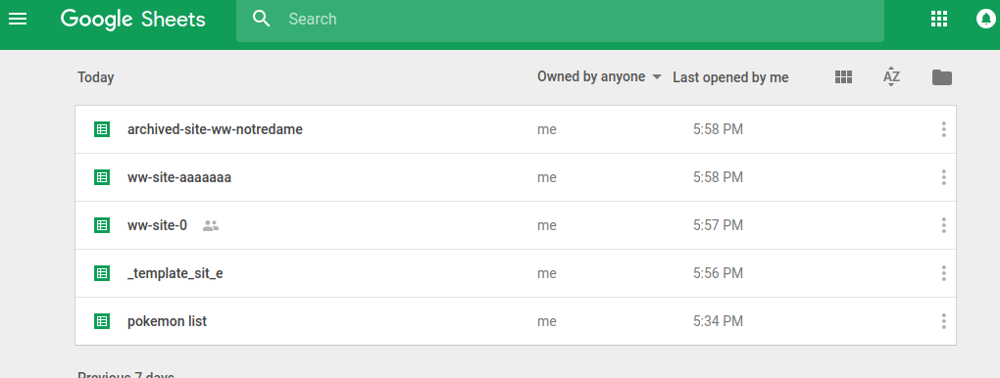
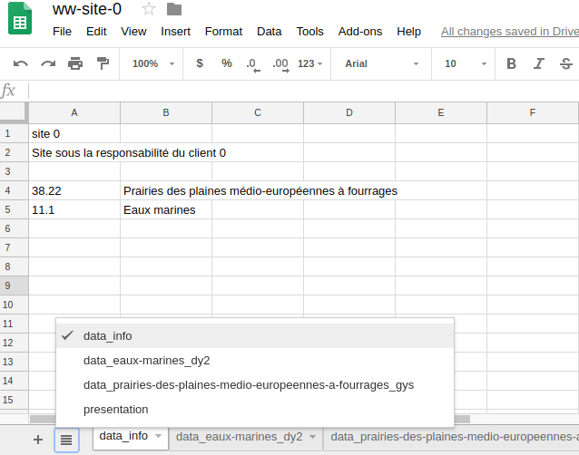
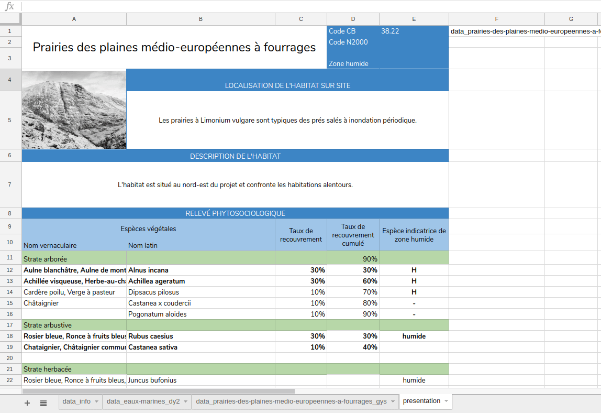

Formating Google SpreadSheet
The goal of the app is to fill up the google doc spreadSheet.
Once this is done, there is a lot you can do to combine and format the data.
Naming Convention
Site
WatWet will create a spreadsheet per site, with the name ww-site-<name of the site>
As you probably don't want the app to mess with the unrelated files you have in your google doc, every files which name does not start with ww-site- will be ignored.
This is also a great opportunity to "archive" sites. You may want to keep a site in your doc, but prevent it to be shown in the app.

Some spreadsheets, the app will use only two of these
Habitat
For every site, WatWet will have a sheet as site info, and one sheet for each habitat.
The site info sheet is always named data_info, and each habitat sheet is name data_<unique id for the habitat>.
Every sheet which does not respect this convention will be left untouched.

The sheets for a site, it has two habitats, and one sheet that is ignored by the app
Templating
Reference
Google SpreadSheet have powerful features for templating.
You can reference a cell from another sheet with the formula =sheetName!B2
That means that for a habitat you can have a presentation sheet, which reference values from the data sheet.
Indirect reference
This is great, but to make the template generic we will use another feature.
With the indirect formula, =INDIRECT(A1&"!B2") you can reference the cell dynamically, depending of the value of another cell.
For our case, we can imagine that A1 contains the name of the data sheet for an habitat. We can then build the template using indirect ref based on the value of A1. After, applying the template to another habitat is has easy as changing the value of A1.

Filling the template with different habitats
The spreadsheet used as example can be seen here : docs.google.com/spreadsheets/d/1GIXS6iGpzqXhCD7WN3wINXfu-kCGSsNJXPfyb4mhepU
Versioning
We can check modifications made on the google doc spreadSheet, at what time and by who.
This is handy to rollback to the last version.